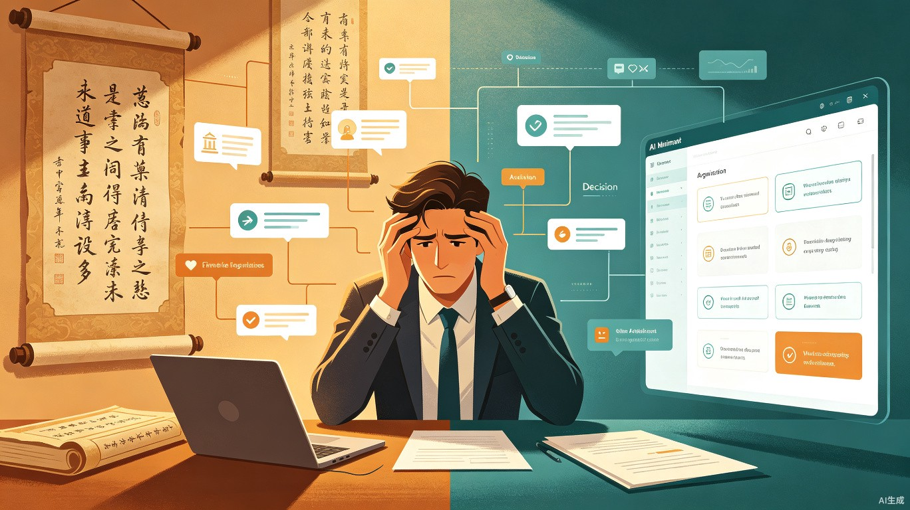
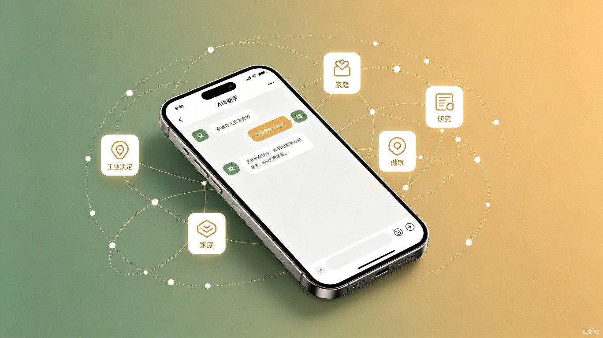
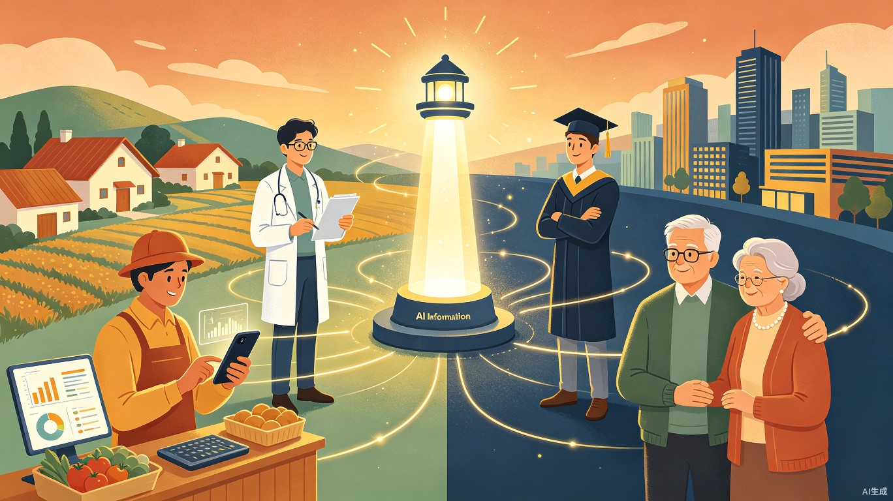

一、创意名称与介绍
创意名称：离骚 AI
想解决什么问题
当代大众同时承受养老赡养、就业内卷、创业承压多重现实压力，长期处于持续焦虑、危机四伏的心理状态，幸福感、安全感、获得感严重缺失。全社会普遍存在严重信息不对称，大幅抬高择业、创业、生活消费的时间与经济成本，各类隐性风险难以预判管控。
古语云"离骚者，犹离忧也"，人长期深陷多重忧患便心神失守、方寸大乱，正如《三国志》所言"今已失老母，方寸乱矣"——多重不确定性叠加下，一件微小变故就可能彻底击溃心理防线。与此同时，科研从业者被大量行政杂务分散核心研发精力，行业科研信息流通闭塞；公共服务体系流程僵化、机械式语音导航效率极低；部分行业头部资本垄断固化，用户可选空间越来越窄。
为什么会想到做这个
日常观察到当代普通人长期负重奔波，努力却难寻清晰发展路径，生活品质持续下滑。市面服务普遍流程繁琐、标准化机械，行业垄断压缩用户自主选择权。
翻阅传统治国处世典故，提炼出三条可落地的底层运营逻辑：
- 孙权理政：外事不决问周瑜，内事不决问张昭 —— 专业人承办专业事务
- 汉高祖约法三章：以极简规则实现高效治理
- 齐国庭燎求贤：以简单真诚的布局聚拢人才、成事兴业
由此总结核心立论：大道至简，专业赋能。简单模式更容易落地成事，普通人可借助专业分工摆脱困境、重拾生活希望。结合《离骚》"离忧"内核与儒家"齐家、治国、平天下"层级成长逻辑，确定产品设计思路：摒弃笨重冗余大模型，以轻量化底层算法为根基，主打极简操作，完成目标拆解、资源精准匹配与一条龙闭环服务。
大概是什么产品
依托轻量化底层算法驱动、区块链可信信息中心支撑，遵循专业分工逻辑，提供多对一专属服务、全流程一条龙闭环服务的轻量化小程序 AI 工具。覆盖人生决策辅助、情绪疏导、科研减负三大核心场景，以极简交互降低使用门槛，让信息多走路、人民少跑路。
二、目标用户及痛点
面向哪些用户
在什么场景下使用
- 大众场景：职场发展瓶颈突破、求职择业规划、创业方向决策、家庭养老压力过载、长期情绪迷茫与自我内耗、人生重大选择纠结
- 科研办公场景：行政杂务挤占研发时间、科研工作流程优化、科研攻坚方向规划、项目资源统筹、跨领域科研信息查询

当前痛点详解
信息差
择业、创业、消费的隐性成本高，潜在风险无法识别。最可怕的不是无知，而是不知道自己不知道
风险失控
缺少科学工具拆分目标、匹配最优路径，重大选择仅凭主观判断，走弯路的代价往往是几年人生
情绪内耗
多重压力叠加导致心理脆弱，每天在信息轰炸中消耗精力，真正重要的事反而无力顾及
事务统筹
线下咨询价格高昂，线上服务各自为政，公共服务交互繁琐，一件简单的事要反复跳转多个平台
服务不公
行业资本垄断加剧信息壁垒，用户选择空间受限，只能被动接受同质化的劣质服务
精力分散
科研人员被杂务淹没，创业者被琐事拖垮——专注力成为当代最稀缺的资源
三、产品形态与核心功能

全流程一条龙闭环服务
离骚 AI 的服务链路覆盖用户需求的完整生命周期，从录入到复盘形成螺旋上升的闭环：
flowchart LR
A["需求录入\n用户表达核心诉求"] --> B["智能拆解\n轻量化算法分解目标"]
B --> C["专业匹配\n多对一精准对接"]
C --> D["全程跟进\n全链路闭环管理"]
D --> E["复盘优化\n数据驱动持续迭代"]
E -.->|"新一轮需求"| A
style A fill:#2a6f5a,color:#fff
style B fill:#2a6f5a,color:#fff
style C fill:#c9956b,color:#fff
style D fill:#c9956b,color:#fff
style E fill:#2a6f5a,color:#fff
核心功能模块
人生决策辅助
针对职场、创业、家庭重大抉择，智能拆解决策要素，匹配最优路径，降低盲目决策风险
情绪疏导引擎
融合传统处世智慧，识别用户心理状态，提供有针对性的情绪疏导与认知重构建议
科研减负平台
剥离科研人员无效杂务，统筹科研项目资源，打通科研信息链路，守护"用志不纷、乃凝于神"的专注力
信息整合枢纽
汇聚政务、行业、专业数据，通过轻量化算法编织成可用知识图谱，一站式解决信息不对称
技术架构：四层分离，约法三章
技术架构的设计哲学来自汉高祖"约法三章"——面对繁杂困局不做加法，而是做减法。每一层只解决一个核心问题，层与层之间的接口干净清晰：
第一层：可信数据底座
区块链分布式账本 + 零知识证明隐私计算，确保信息不可篡改、可追溯、隐私安全。解决信息造假、数据垄断和隐私泄露三大顽疾。
第二层：智能算法引擎
轻量化 AI 算法集群，专注需求拆解、信息关联、风险识别和资源匹配。以小模型、快响应、低门槛为设计原则，摒弃笨重通用大模型。
第三层：服务编排中台
全流程一条龙服务的指挥中心。自动调度需求录入、智能拆解、专业匹配、全程跟进、复盘优化各环节，确保服务链路连续闭环。
第四层：全终端应用层
面向不同场景输出多种终端形态：微信小程序（轻量触达）、Web 网站（深度交互）、桌面 APP（专业办公场景）。多端数据实时同步，体验无缝衔接。
四、创意灵感：千年典故的当代回响
离骚 AI 的每一条设计原则，都可在传统治国处世典故中找到源头。这些跨越千年的思想，恰恰回答了当代最紧迫的问题。
外事不决问周瑜，内事不决问张昭 孙权理政典故 —— 回答了"谁来服务"的问题：专业的人做专业的事
孙权能在群雄逐鹿中守住江东三分天下，不是因为他事事亲力亲为，而是因为他懂得把专业的事交给专业的人。离骚 AI 的多对一专属服务正是这一逻辑的数字化落地：一个用户的核心需求，由跨领域专业团队协同承接，而非一个通才式 AI 试图回答所有问题。
与秦民约法三章：杀人者死，伤人及盗抵罪 汉高祖约法三章 —— 回答了"怎么设计"的问题：化繁为简，极简治理
秦法繁苛，民生凋敝。刘邦入关后第一件事不是添法，而是做减法。离骚 AI 的产品交互遵循同样原则：用户不需要学习复杂操作流程，只需表达需求，系统自动拆解、匹配、跟进。极简不是简陋，是把复杂度藏在系统内部，把自由还给用户。
夫九九薄能，君犹礼之，况贤于九九者乎？泰山不让砾石，江海不辞小流，所以成其大也 《韩诗外传》庭燎求贤 —— 回答了"谁来贡献"的问题：广纳天下贤才，积小成大
齐桓公从能算九九乘法表的普通人开始礼遇，最终汇聚一代名臣。离骚 AI 的人才展示通道承袭同一逻辑：为每一个领域的行家里手提供被看见的舞台，不追求大 V 流量，而是连接每一个微小但专业的个体。
凡人作事，以专而精，以纷而散；用志不纷，乃凝于神 《曾文正家书》 —— 回答了"怎么服务科研群体"的问题：剥离杂务，聚焦核心
曾国藩反复告诫子弟：做事要专注，精力分散则一事无成。对于被行政杂务淹没的科研人员，离骚 AI 扮演的正是剥离纷扰、守护专注的角色——把杂务交给专业团队，让科研人员回到"用志不纷、乃凝于神"的状态。
五、项目价值与意义
效率价值
- 技术底层：轻量化算法为核心驱动，区块链搭建可信信息服务中心，保障信息透明、安全、可追溯
- 服务模式：多对一专项服务聚焦用户核心诉求，打通全域信息壁垒，提前识别、管控各类潜在风险
- 操作设计：对标"约法三章"极简治理思路，极简交互完成目标自动拆解、资源智能精准匹配，配套全闭环服务
- 长效运营：品牌战略与人才战略双向迭代，优选匹配算法持续升级多对一服务体系，搭建人才展示通道助力工匠精神落地
社会价值

- 心理疏导层面：疏导当代群体普遍性焦虑与精神内耗，平复心态混乱人群，全面提升大众生活品质，补齐幸福感、安全感、获得感短板
- 个人成长层面：遵循儒家"齐家、治国、平天下"递进逻辑，分层分步辅助用户完成各阶段目标；借鉴孙权专业分工思路，剥离科研人员无效杂务，助力国内科研缩小与欧美技术差距
- 行业改良层面：参照"庭燎求贤"聚才理念，轻量化产品降低使用门槛；采用多点布局、投石击水的温和渐进方案，逐步弱化行业垄断、僵化公共服务的弊端
- 长期人文价值：让普通人通过简单便捷的数字化路径走出困境，看见未来希望，实现从个人修身提质到普惠大众、改良行业生态的宏观社会赋能
六、四大创新维度
技术创新
轻量化 AI 算法 + 区块链可信信息服务中心，兼顾低使用门槛、数据隐私安全、信息公开透明。不堆砌冗余大模型，以小模型、快响应服务真实场景。
服务创新
多对一专属专家服务 + 全链路一条龙闭环服务，从需求录入到复盘优化覆盖完整流程。一个入口、一次提交、全程跟进，不把用户从一个平台推到另一个平台。
运营创新
品牌战略 + 人才战略双向迭代，内置人才展示通道，扶持专业匠人与优秀从业者。参照庭燎求贤理念，让泰山不让砾石、江海不辞小流。
行业创新
轻量化多点分布式布局，温和渐进破解垄断与信息差。小车推大车、投石击水，不起浪花也泛涟漪，不激进变革、落地难度低。
七、引用典籍与核心立论
| 典籍出处 | 引用原文 | 项目映射 |
|---|---|---|
| 《屈原贾生列传》 （司马迁） |
离骚者，犹离忧也 | 产品命名与核心定位 |
| 《屈原贾生列传》 | 其文约，其辞微，其志洁，其行廉 | 设计哲学：以简约为美 |
| 《屈原贾生列传》 | 怀王不知忠臣之分，内惑外欺，此不知人之祸也 | 信息不对称的代价 |
| 《三国志》 | 今已失老母，方寸乱矣 | 多重压力下方寸大乱 |
| 孙权理政典故 | 外事不决问周瑜，内事不决问张昭 | 专业的人做专业的事 |
| 汉高祖约法三章 | 杀人者死，伤人及盗抵罪 | 化繁为简，极简交互 |
| 《韩诗外传》 庭燎求贤 |
泰山不让砾石，江海不辞小流 | 普惠理念：连接每一个个体 |
| 《曾文正家书》 | 用志不纷，乃凝于神 | 科研减负：守护专注力 |
| 儒家修身理论 | 齐家、治国、平天下 | 用户成长路径 |
三大核心立论
大道至简
越是复杂的时代，越需要简单的工具。化繁为简是把复杂度藏在系统内部，把自由与掌控感还给用户
专业赋能
专业的人做专业的事。信息服务基站的价值不是替代人，而是让每个人在最擅长的事上发挥最大价值
渐进改良
小车推大车，投石击水，不起浪花也泛涟漪。以轻量化布局温和消解行业固有的垄断与不公
写在最后
路漫漫其修远兮，吾将上下而求索。 屈原《离骚》
两千三百年前，屈原在被放逐的荒路上写下这句诗。他没有等到楚国的振兴，却留下了一种精神：在最深的困顿中，依然相信路在前方，依然愿意上下求索。
离骚 AI 不自诩能根治这个时代的信息病，但它确信一件事：技术的价值，不在于制造更多需要处理的信息，而在于替人消化信息、减轻负担、还人以选择的自由。
投石击水，不起浪花也泛涟漪。
大道至简，离忧可解。
让信息多走路，让人民少跑路。